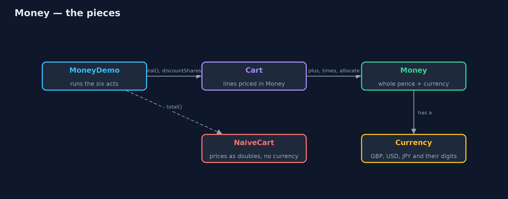
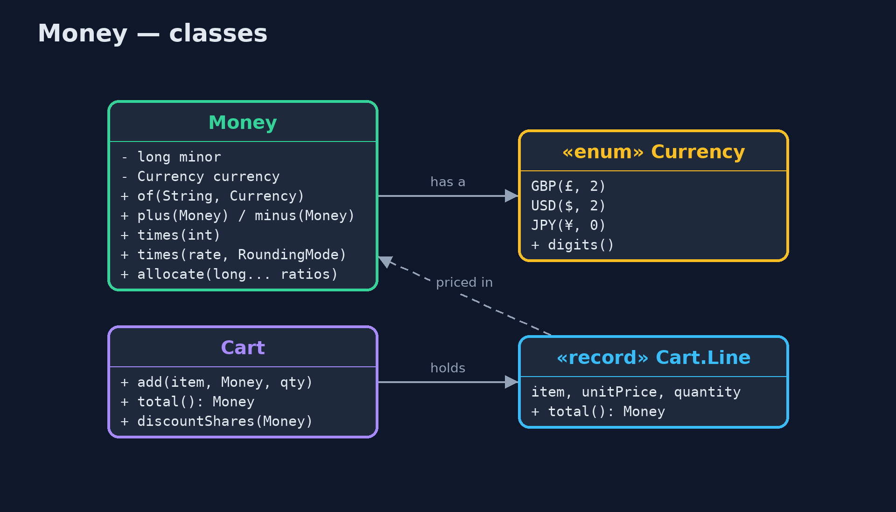
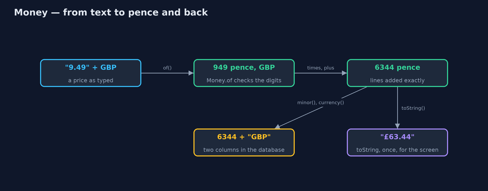
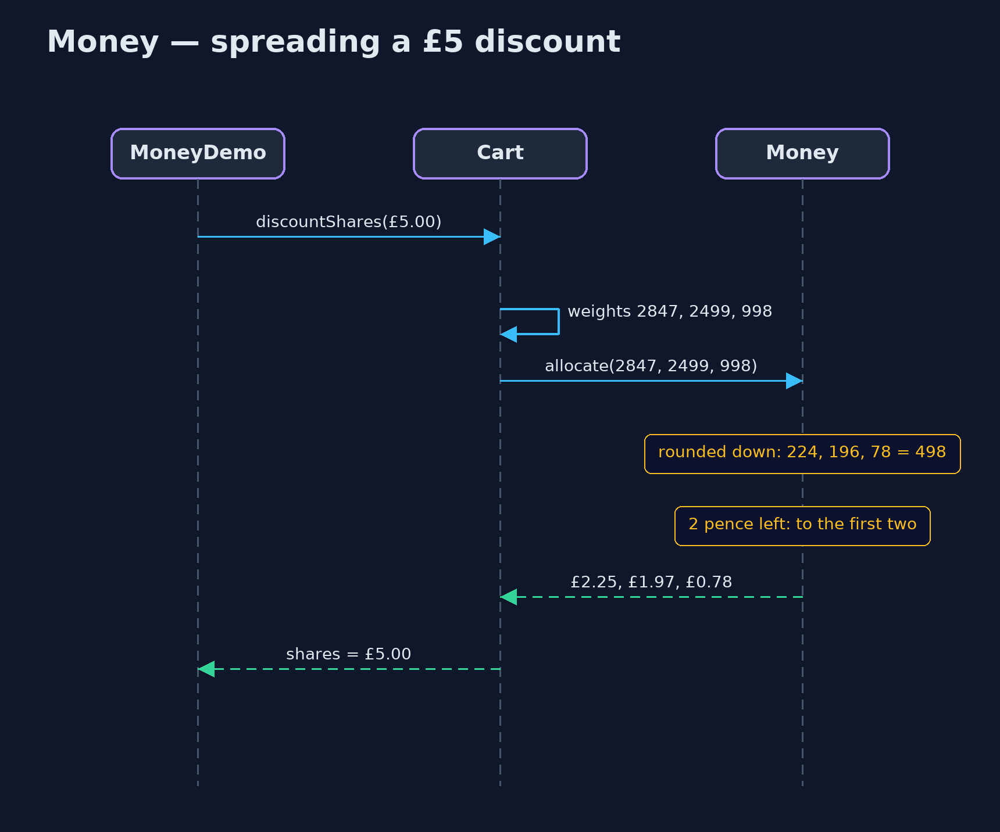

Money Pattern
src/main/java/com/jk/explore/money/
├── Cart.java The same cart, with every price held as Money in one currency
├── Currency.java The currencies the shop sells in, each with how many digits follow the point
├── Money.java An amount of money: a whole number of the smallest unit, plus its currency
├── MoneyDemo.java The six acts: doubles, then Money, currencies, rounding, splitting, and the bill
└── NaiveCart.java The obvious cart: every price is a double, and there is no currency at allA price is not a number. It is an amount of the smallest coin, plus a currency, and it should never round without being asked.
Money is one of Martin Fowler's enterprise application patterns. Instead of keeping a price in a double, you keep it in a small class that holds a whole number of the smallest coin (pence, cents) together with its currency. The class adds, multiplies and splits amounts exactly, refuses to mix currencies, and makes every rounding decision visible.
It is one of the simplest patterns in this course, and one of the most useful: almost every business system handles money, and most of them have a bug that this class would have prevented.
The idea in everyday terms
Think of a cash drawer in a shop. The drawer never holds "nineteen point nine nine" of anything. It holds coins and notes: one thousand nine hundred and ninety-nine pence, all of them pounds. You can count them exactly, you can share them out exactly, and nobody puts a dollar in the pound drawer by accident.
A double is more like a measuring jug. It is good for flour or water, where "about 300 millilitres" is fine. It is the wrong tool for pennies, where "about" is a bug.
The scenario
The online store adds up baskets, charges VAT, splits basket discounts across the lines, and sells in pounds, dollars and yen. The first version kept every price in a double. It worked in every test anybody wrote, and then a report showed ten thousand pence of stickers as nine thousand nine hundred and ninety-nine.
Run
./gradlew runThe demo tells the story in 6 acts, each printing exact numbers that the tests check:
| Act | What it shows |
|---|---|
| 1. Prices as doubles | 10p + 20p is 0.30000000000000004; 1000 × 10p becomes 9999 pence; pounds and dollars add without complaint. |
| 2. Prices as Money | 10p + 20p is exactly £0.30; 1000 × 10p is £100.00, stored as 10000 pence; a real cart totals £63.44. |
| 3. Currencies travel with the amount | £10 + $10 is refused; yen have no pennies; £9.999 is refused. |
| 4. Rounding is a choice, made once | 20% VAT on ten 99p items: £2.00 rounded per line, £1.98 rounded once on the total. |
| 5. Splitting without losing a penny | £10 ÷ 3 is £3.33 × 3 = £9.99; allocate gives £3.34, £3.33, £3.33 = £10.00; a £5 discount spreads as £2.25, £1.97, £0.78. |
| 6. The bill | A price is now a class that must be converted at every edge, and currency conversion is still a separate job. |
Test
./gradlew test20 tests in AllocationTest, DemoRunsTest, MoneyTest. Every number the demo prints is asserted, and nothing depends on the clock, so every run gives the same result.
Technologies and versions
| Technology | Version | Used for |
|---|---|---|
| Java | 21 | the code (toolchain set in build.gradle) |
| Gradle | 9.2.1 (wrapper) | build and run, nothing to install |
| JUnit | 5.10.2 | the tests |
| videokit | repository tool | the narrated video and animation: Piper en_US-amy-medium, speed 0.8, longer pauses (the approved amy-slow voice) |
Learning Material
| Document | What it is for |
|---|---|
| Problem statement | the situation and what the project must show |
| Prerequisites | what you need to know first |
| Money, explained | the acts in prose |
| Session guide | a one-hour lesson with exercises |
| Animated walkthrough | the acts step by step, narrated |
| Spec | what this project must be true of |
The pattern in one picture
The demo drives two carts. The naive one holds doubles; the other holds Money, which knows its currency and how to split itself.

Where each piece sits
Money is small: two fields, and methods that each return a new Money.

How the data moves
Text becomes whole pence once, on the way in, and text again once, on the way out. In between, only whole numbers move.

Who calls whom, in order
The cart weighs each line by its value and asks Money to allocate; Money hands out the leftover pennies.

Video
video/money-pattern-explained.mp4 (with .m4a audio and .srt subtitles) is built by video/build_video.sh. Rendered media is not committed.
What it costs
- A price is a class, not a number. Every place that stores, sends or shows one must convert it: to a whole number and a currency code for the database, and to text for the screen.
- Rounding must be decided. Money refuses to round silently, so someone has to choose where rounding happens (each line, or once on the total) and how.
- Currency conversion is still yours. Turning pounds into dollars needs a rate and a date. That is a separate job, deliberately left out of Money.
- A little more code. A few dozen lines for the class and its tests.
When this is too much
Very rarely. If a program only ever shows a price that someone else already worked out, a string may be enough. As soon as the program adds, multiplies, splits or compares prices, use Money, or an existing library such as JSR 354 (Moneta) or Joda-Money.
Where you have already met this
java.math.BigDecimal, the usual building block for money in Java.- JSR 354, the Java Money and Currency API, and its reference implementation Moneta.
- Payment APIs such as Stripe, which take amounts as whole numbers of the smallest unit (
amount: 1999,currency: "gbp"). - Database columns like
price_pence INTEGERnext to acurrency CHAR(3)column.
Where this sits
This project is in enterprise-design-patterns, next to Value Object, which Money is the best-known example of.